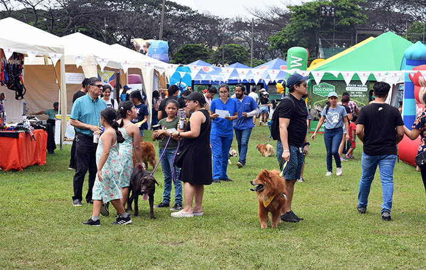

Experiencias
Siete personas cuentan qué las llevó al evento de mascotas de las Fiestas Octubrinas

El Festivanimal 2026, celebrado en la cancha de la Federación Ecuatoriana de Béisbol, detrás del Parque de la Kennedy, en Guayaquil, la cual reunió a emprendedores, fundaciones y familias con sus mascotas. Durante las entrevistas realizadas el 4 de octubre, siete asistentes coincidieron en una idea principal: seis recomendarían el evento, aunque reconocieron que la lluvia afectó parte de la experiencia.
Un público que va por algo más que un paseo
La mayoría de los entrevistados llegó con un objetivo concreto ya sea promocionar un emprendimiento, buscar hogar para animales rescatados, conocer productos o acompañar a un familiar. Solo una persona citó el disfrute con su mascota como motivo principal.
Lo que destacaron al salir refuerza esa tendencia, pues valoraron la adopción, las vacunas y la información sobre salud animal por encima de lo recreativo. Incluso quien se mostró más crítico pidió más consejos sobre bienestar animal, señal de que los asistentes buscan aprender y no solo entretenerse.
La lluvia, el punto débil
Tres de los siete entrevistados señalaron que el clima afectó el evento. Una asistente contó que el piso húmedo la obligó a cargar a su perrita por momentos, y una emprendedora propuso realizarlo en una época con menos lluvias. Otra persona advirtió que las aglomeraciones pueden estresar a los perros. Pese a ello, el balance fue favorable, dado que las críticas se centraron en el espacio y la difusión, no en la organización general.